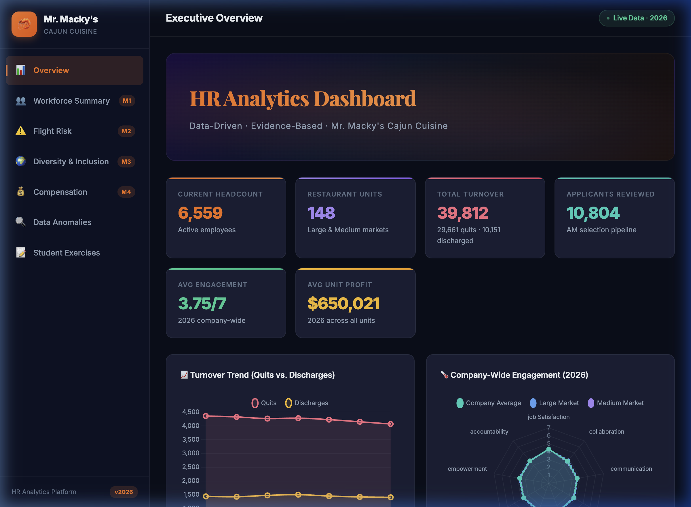
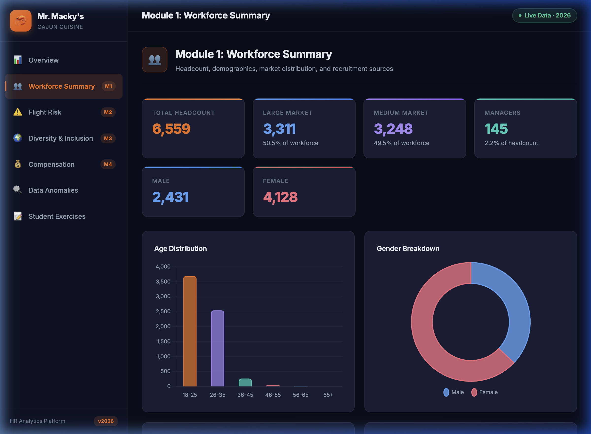
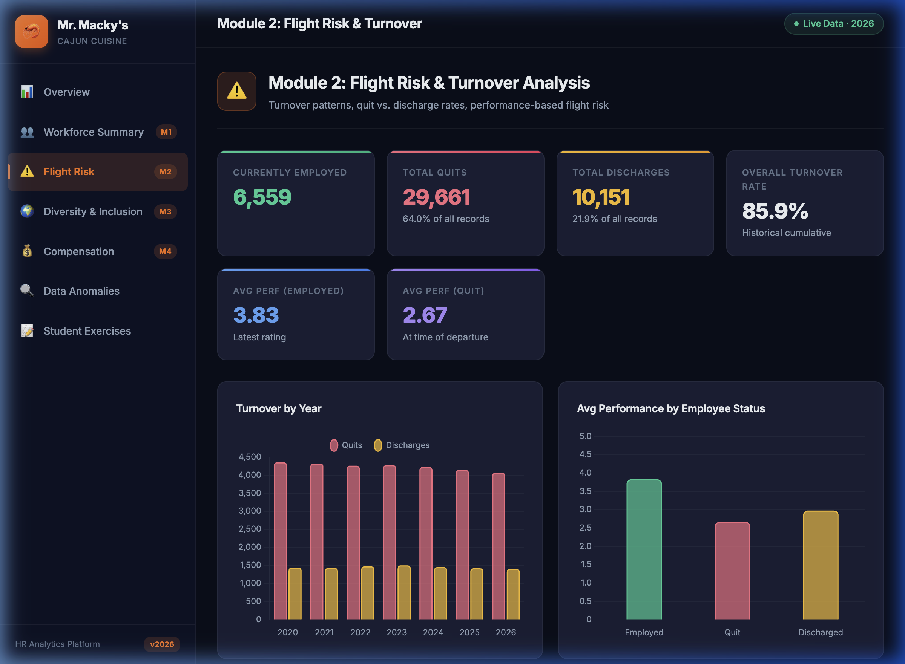
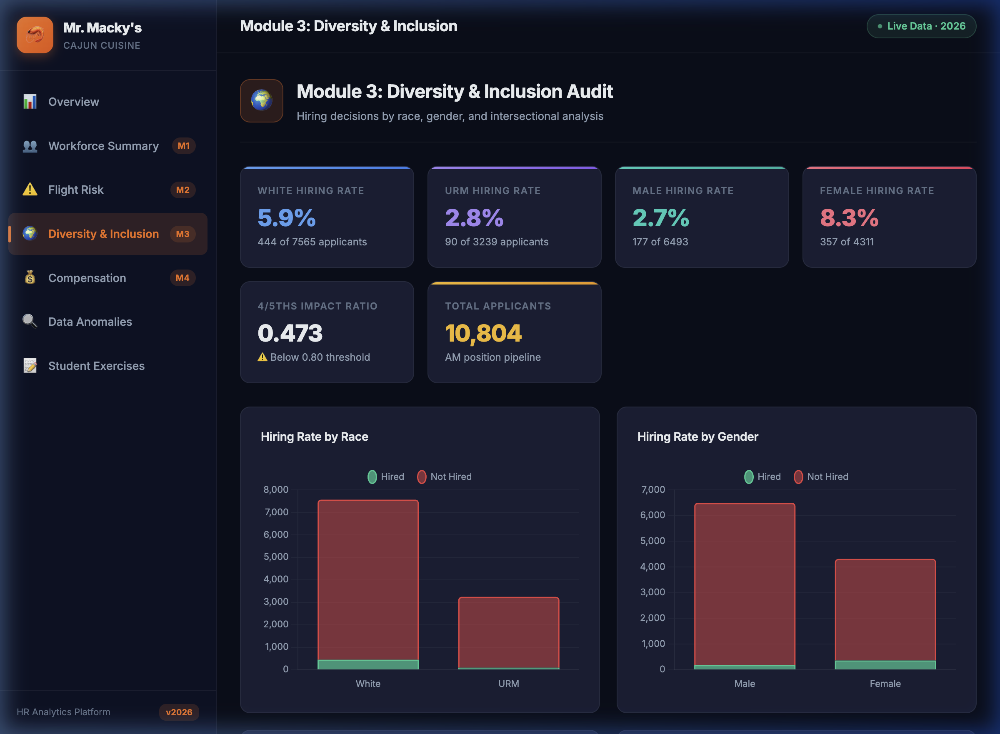
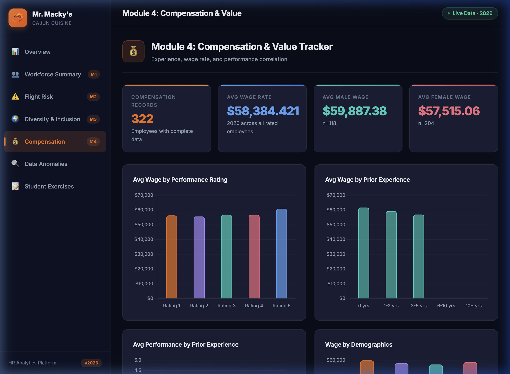

An interactive data dashboard for Mr. Macky's Cajun Cuisine. This presentation will walk you through the tools you'll use to become a data-driven HR professional.
▶ Presentation · 8 slides · ~3 minMr. Macky's Cajun Cuisine operates 148 restaurant units with 6,559 employees. Managing this workforce by instinct alone isn't enough — we need evidence.

The overview page gives you a snapshot of the entire organization at a glance — headcount, financials, turnover trends, and engagement scores.

Understand who works here. Age distributions, gender mix, market types (Large vs. Medium), job roles, and — critically — which recruitment sources produce the best-performing managers.

Our historical turnover rate is 85.9%. The interactive heatmap lets you pinpoint exactly which units are bleeding employees — and whether it's quits or discharges.

This module examines our AM hiring pipeline — over 10,800 applicants. The 4/5ths rule analysis reveals something important.

Does experience equal performance? This module tracks the relationship between prior experience, wage rate, and actual job performance across 322 employees with complete data.
You now have the tools to conduct real HR analytics. Use the five exercises built into the dashboard to practice evidence-based decision making.